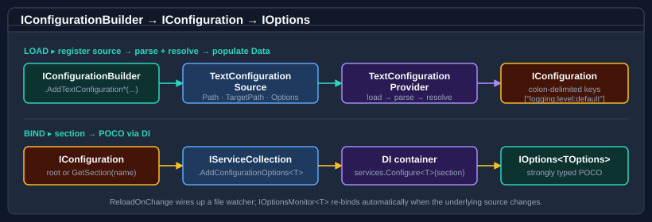

Bodu.Extensions.Configuration.Text guides
Recipe-style walk-throughs for Bodu.Extensions.Configuration.Text — the bridge between
Bodu.Text.Configuration and Microsoft.Extensions.Configuration, built on
TextConfigurationSource,
TextStreamConfigurationSource, and the
ConfigurationOptionsExtensions options-binding helpers.
If you are new to the library, start with the introduction, the Core concepts glossary, and the getting-started page. The guides below assume you know the vocabulary (source, provider, target path, parse / resolve option propagation, reload-on-change, options binding).
How the library works

AddTextConfigurationFile(...) registers a TextConfigurationSource on the
builder. When the builder calls Build, the source instantiates a
TextConfigurationProvider that parses the file via
ConfigurationDocument, resolves it for the source's TargetPath, and copies the
flattened view into the inherited Data dictionary as colon-delimited keys. The DI options helper binds named
sections to typed POCO classes through the standard Microsoft.Extensions.DependencyInjection shape.
Guides
Configuration sources
Every AddTextConfiguration* overload — file, stream, pre-parsed document, convention-based discovery, fluent source configuration — plus the read-only AddTomlFile / AddTomlStream and AddBencodeFile / AddBencodeStream bridges, reload-on-change, IOptions<T> binding, and layering alongside JSON and environment-variable sources.
Introduction
Package overview — what the bridge adds on top of Bodu.Text.Configuration, headline types, and the scenarios it was built for.
Core concepts
The shared vocabulary — source, provider, target path, option propagation, reload token, options binding.
Getting started
Install the package and run the minimal samples — a file source, a typed options class, and a Generic Host wiring.
Reading path
- Getting started — install and confirm the minimal file-source sample runs.
- Configuration sources — pick the right
AddTextConfiguration*overload for your scenario and wire up options binding and reload. - Views and resolution — when you need to understand which value the bridge surfaced, drop down to the underlying resolve layer.
The bridge propagates ParseOptions and ResolveOptions verbatim to the underlying library, so everything in the
Bodu.Text.Configuration guides — profiles, glob anchoring, key mapping, diagnostics —
applies unchanged to values consumed through IConfiguration.
Namespace map
| Namespace | What lives here | Static docs |
|---|---|---|
Bodu.Extensions.Configuration.Text |
Builder extensions (TextConfigurationExtensions), file source / provider (TextConfigurationSource, TextConfigurationProvider), stream source / provider (TextStreamConfigurationSource, TextStreamConfigurationProvider), the read-only TOML bridge (TomlConfigurationExtensions, TomlConfigurationSource, TomlConfigurationProvider), the read-only Bencode bridge (BencodeConfigurationExtensions, BencodeConfigurationSource, BencodeConfigurationProvider), DI options helpers (ConfigurationOptionsExtensions). |
Introduction · Core concepts · Getting started |
Where to go next
- Runnable samples — the offline BridgeHosting sample under
samples/Text.Configuration/:AddTextConfigurationFilewithtargetPath,AddTomlFile, andIOptions<T>binding. - Introduction — namespaces, headline types, scenarios.
- Core concepts — full vocabulary.
- Getting started — install + runnable minimal samples.
- Configuration topic guides — the topic map for both configuration packages.
- Configuration topic overview — the pipeline and package boundaries across both packages.
- Bodu.Extensions.Configuration.Text API reference — full type-by-type docs.
- Bodu.Text.Configuration — the underlying parser, resolver, and view.